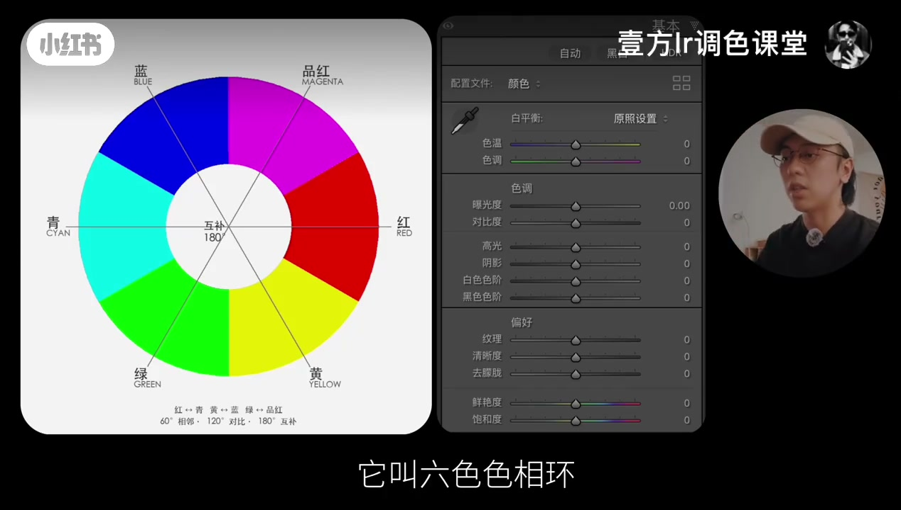
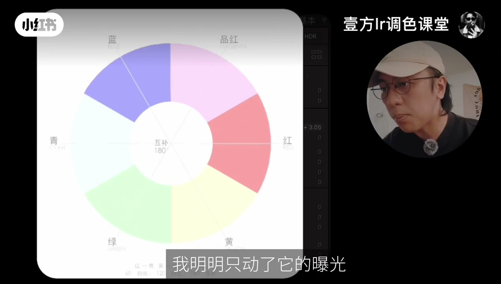
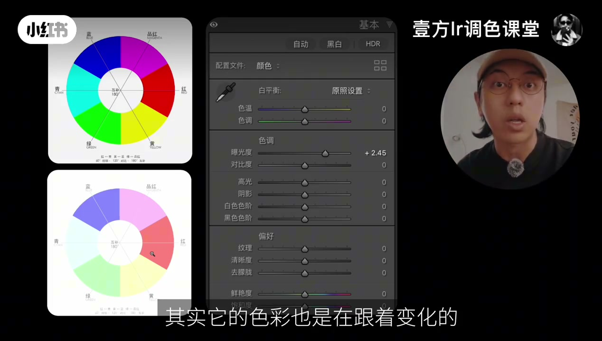
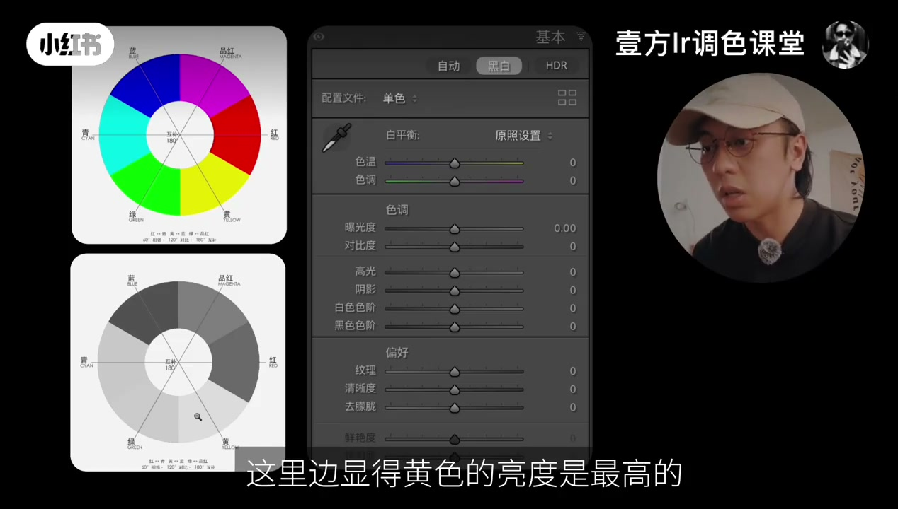
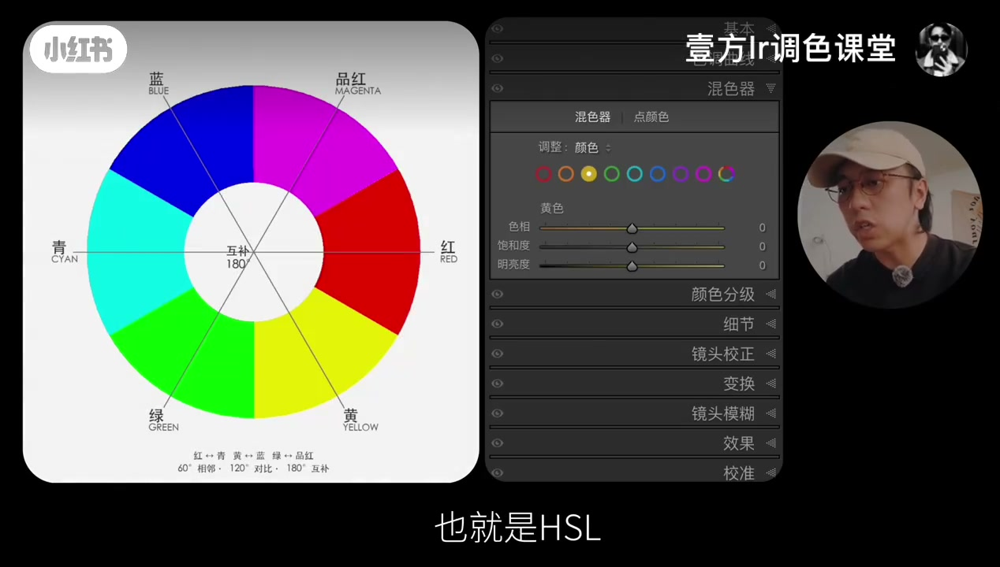
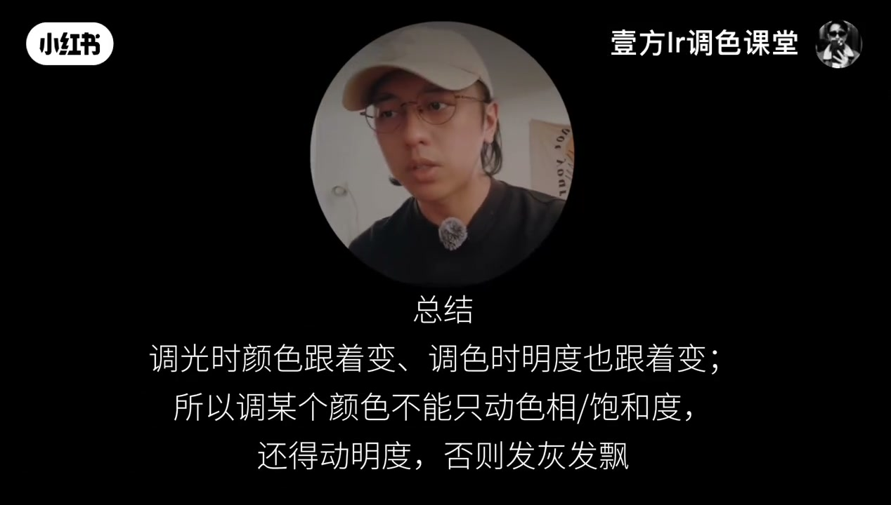

内容要点
知识结构
点题「光色联动」；打开电脑，先认识六色色相环，并对照 Lightroom 修改面板里的曝光、鲜艳度、饱和度等滑杆。
只抬曝光，色环明显变淡。动光会影响色彩，这就是调亮后画面越来越「发灰」的常见原因；补鲜艳度 / 饱和度才能重新均衡。
复原后转黑白：除白色外，黄色明度最高。作者解释为自然界中黄光波长更长，所以显得偏白——此为口播观点。
影响光线的全局工具「牵一发而动全身」，要用混色器（HSL）做分通道；动色相/饱和度时明度也会变，三要素须一起调，否则发灰。
更细的知识放在主页笔记；作者称做摄影调色十来年，若赞数过千打算每周日讲一个热门调色知识点。
调光时颜色跟着变，调色时明度也跟着变；不要只拧一个旋钮。曝光变化要补饱和，单色调整要用 HSL 同时照顾色相、饱和度与明度，才能避免发灰发飘。
图文实录
开场：先认六色色相环
视频以「光色联动你都不知道是啥，难怪你调色翻车」开场，随即切到电脑屏幕。作者先让常调色的同学辨认左侧图示——它叫六色色相环（红、黄、绿、青、蓝、品红，并标互补色 180°）。右侧是 Lightroom「修改」面板：曝光度、对比度、高光/阴影，以及底部的鲜艳度与饱和度，为后面的实验铺好控件。

实验一：只动曝光，颜色跟着淡
作者抛出问题：调整画面曝光，影响的是明亮程度，还是色彩？随即现场试做。对比前后可以看到：明明只动了曝光，色相环上的颜色却明显变淡。他把这种现象命名为光色联动——改光线或亮度时，色彩其实也在同步变化。

画面切成上下对照：上方色环饱和、下方粉白发飘；中间手机版 Lightroom 的曝光度被拉到约 +2.48，其他色调滑杆仍在零位，把「只动光」的因果钉死。

由此解释「调色容易把画面调得越来越发灰」：只提亮却不补色彩，饱和感就被冲淡。作者建议动曝光的同时，去动鲜艳度、饱和度等参数，让画面重新达到均衡。
实验二：转黑白，看见色光联动
第二步先复原，再把画面变成黑白，其他参数不动。问题变成：为什么在黑白图里，除了白色以外，红黄蓝绿青橙里黄色显得最亮？作者的解释是：颜色靠光传播被看见，黄光波长更长，所以会显得偏白——他把这种现象叫做色光联动（颜色本身携带不同的明度信息）。

注意：这里「黄光波长最长」是作者口播说法，用于帮助记忆「色相会牵动明度」；是否与物理教材表述完全一致，视频未给出外部出处，阅读时按作者观点理解即可。
实操：混色器 HSL，三要素一起动
两者的区别被概括成：调整影响光线的全局工具时，「牵一发而动全身」——动一个点，整幅图都跟着动。此时要用混色器，也就是 HSL。作者演示动橙色的饱和度与色相后，该色看起来会比旁边颜色略亮一点，再次印证「动色也会动明」。

本课重点落在一句话：调色过程中，如果动了色彩三要素里的某一个，另外两个也要跟着动，不然画面容易发灰。总结页把逻辑压成三行——

收尾：笔记与连载预告
篇幅不够展开的相关知识，作者放进了主页顶置笔记，并称自己做摄影调色十来年、积累了大量类似笔记。若视频赞数高于 1000，他打算每周日讲一个摄影调色热门知识点。全片没有额外实拍场景切换，证据链完全落在色相环演示与 Lightroom 控件上。